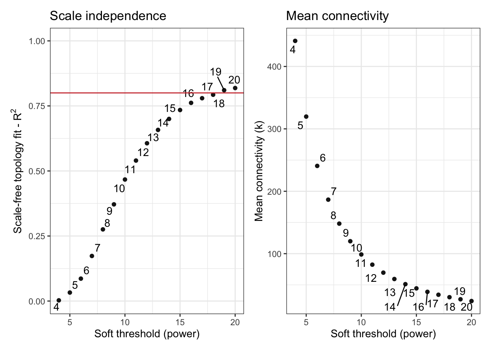

Dox_prot_WGCNA
2023-11-04
Last updated: 2023-11-17
Checks: 7 0
Knit directory: myproject/
This reproducible R Markdown analysis was created with workflowr (version 1.7.1). The Checks tab describes the reproducibility checks that were applied when the results were created. The Past versions tab lists the development history.
Great! Since the R Markdown file has been committed to the Git repository, you know the exact version of the code that produced these results.
Great job! The global environment was empty. Objects defined in the global environment can affect the analysis in your R Markdown file in unknown ways. For reproduciblity it’s best to always run the code in an empty environment.
The command set.seed(20230911) was run prior to running
the code in the R Markdown file. Setting a seed ensures that any results
that rely on randomness, e.g. subsampling or permutations, are
reproducible.
Great job! Recording the operating system, R version, and package versions is critical for reproducibility.
Nice! There were no cached chunks for this analysis, so you can be confident that you successfully produced the results during this run.
Great job! Using relative paths to the files within your workflowr project makes it easier to run your code on other machines.
Great! You are using Git for version control. Tracking code development and connecting the code version to the results is critical for reproducibility.
The results in this page were generated with repository version 0c8e303. See the Past versions tab to see a history of the changes made to the R Markdown and HTML files.
Note that you need to be careful to ensure that all relevant files for
the analysis have been committed to Git prior to generating the results
(you can use wflow_publish or
wflow_git_commit). workflowr only checks the R Markdown
file, but you know if there are other scripts or data files that it
depends on. Below is the status of the Git repository when the results
were generated:
Ignored files:
Ignored: .DS_Store
Ignored: analysis/.DS_Store
Note that any generated files, e.g. HTML, png, CSS, etc., are not included in this status report because it is ok for generated content to have uncommitted changes.
These are the previous versions of the repository in which changes were
made to the R Markdown (analysis/WPCNA.Rmd) and HTML
(docs/WPCNA.html) files. If you’ve configured a remote Git
repository (see ?wflow_git_remote), click on the hyperlinks
in the table below to view the files as they were in that past version.
| File | Version | Author | Date | Message |
|---|---|---|---|---|
| Rmd | 0c8e303 | Omar-Johnson | 2023-11-17 | Publish aanalysis files for myproject |
Libraries
library(EDASeq)Loading required package: BiobaseLoading required package: BiocGenerics
Attaching package: 'BiocGenerics'The following objects are masked from 'package:stats':
IQR, mad, sd, var, xtabsThe following objects are masked from 'package:base':
anyDuplicated, append, as.data.frame, basename, cbind, colnames,
dirname, do.call, duplicated, eval, evalq, Filter, Find, get, grep,
grepl, intersect, is.unsorted, lapply, Map, mapply, match, mget,
order, paste, pmax, pmax.int, pmin, pmin.int, Position, rank,
rbind, Reduce, rownames, sapply, setdiff, sort, table, tapply,
union, unique, unsplit, which.max, which.minWelcome to Bioconductor
Vignettes contain introductory material; view with
'browseVignettes()'. To cite Bioconductor, see
'citation("Biobase")', and for packages 'citation("pkgname")'.Loading required package: ShortReadLoading required package: BiocParallelWarning: package 'BiocParallel' was built under R version 4.2.1Loading required package: BiostringsWarning: package 'Biostrings' was built under R version 4.2.1Loading required package: S4VectorsLoading required package: stats4
Attaching package: 'S4Vectors'The following objects are masked from 'package:base':
expand.grid, I, unnameLoading required package: IRangesWarning: package 'IRanges' was built under R version 4.2.1Loading required package: XVectorLoading required package: GenomeInfoDbWarning: package 'GenomeInfoDb' was built under R version 4.2.1
Attaching package: 'Biostrings'The following object is masked from 'package:base':
strsplitLoading required package: RsamtoolsLoading required package: GenomicRangesLoading required package: GenomicAlignmentsWarning: package 'GenomicAlignments' was built under R version 4.2.1Loading required package: SummarizedExperimentLoading required package: MatrixGenericsLoading required package: matrixStats
Attaching package: 'matrixStats'The following objects are masked from 'package:Biobase':
anyMissing, rowMedians
Attaching package: 'MatrixGenerics'The following objects are masked from 'package:matrixStats':
colAlls, colAnyNAs, colAnys, colAvgsPerRowSet, colCollapse,
colCounts, colCummaxs, colCummins, colCumprods, colCumsums,
colDiffs, colIQRDiffs, colIQRs, colLogSumExps, colMadDiffs,
colMads, colMaxs, colMeans2, colMedians, colMins, colOrderStats,
colProds, colQuantiles, colRanges, colRanks, colSdDiffs, colSds,
colSums2, colTabulates, colVarDiffs, colVars, colWeightedMads,
colWeightedMeans, colWeightedMedians, colWeightedSds,
colWeightedVars, rowAlls, rowAnyNAs, rowAnys, rowAvgsPerColSet,
rowCollapse, rowCounts, rowCummaxs, rowCummins, rowCumprods,
rowCumsums, rowDiffs, rowIQRDiffs, rowIQRs, rowLogSumExps,
rowMadDiffs, rowMads, rowMaxs, rowMeans2, rowMedians, rowMins,
rowOrderStats, rowProds, rowQuantiles, rowRanges, rowRanks,
rowSdDiffs, rowSds, rowSums2, rowTabulates, rowVarDiffs, rowVars,
rowWeightedMads, rowWeightedMeans, rowWeightedMedians,
rowWeightedSds, rowWeightedVarsThe following object is masked from 'package:Biobase':
rowMedianslibrary(RUVSeq)Loading required package: edgeRWarning: package 'edgeR' was built under R version 4.2.1Loading required package: limmaWarning: package 'limma' was built under R version 4.2.1
Attaching package: 'limma'The following object is masked from 'package:BiocGenerics':
plotMAlibrary(RColorBrewer)
library(edgeR)
library(limma)
library(Biobase)
library(SummarizedExperiment)
library(tidyverse) ── Attaching core tidyverse packages ──────────────────────── tidyverse 2.0.0 ──
✔ dplyr 1.1.2 ✔ readr 2.1.4
✔ forcats 1.0.0 ✔ stringr 1.5.0
✔ ggplot2 3.4.3 ✔ tibble 3.2.1
✔ lubridate 1.9.2 ✔ tidyr 1.3.0
✔ purrr 1.0.2 ── Conflicts ────────────────────────────────────────── tidyverse_conflicts() ──
✖ lubridate::%within%() masks IRanges::%within%()
✖ dplyr::collapse() masks Biostrings::collapse(), IRanges::collapse()
✖ dplyr::combine() masks Biobase::combine(), BiocGenerics::combine()
✖ purrr::compact() masks XVector::compact()
✖ purrr::compose() masks ShortRead::compose()
✖ dplyr::count() masks matrixStats::count()
✖ dplyr::desc() masks IRanges::desc()
✖ tidyr::expand() masks S4Vectors::expand()
✖ dplyr::filter() masks stats::filter()
✖ dplyr::first() masks GenomicAlignments::first(), S4Vectors::first()
✖ dplyr::id() masks ShortRead::id()
✖ dplyr::lag() masks stats::lag()
✖ dplyr::last() masks GenomicAlignments::last()
✖ ggplot2::Position() masks BiocGenerics::Position(), base::Position()
✖ purrr::reduce() masks GenomicRanges::reduce(), IRanges::reduce()
✖ dplyr::rename() masks S4Vectors::rename()
✖ lubridate::second() masks GenomicAlignments::second(), S4Vectors::second()
✖ lubridate::second<-() masks S4Vectors::second<-()
✖ dplyr::slice() masks XVector::slice(), IRanges::slice()
✖ tibble::view() masks ShortRead::view()
ℹ Use the conflicted package (<http://conflicted.r-lib.org/>) to force all conflicts to become errorslibrary(ggfortify)
library(cluster)
library(edgeR)
library(limma)
library(biomaRt)
library(Homo.sapiens)Loading required package: AnnotationDbi
Attaching package: 'AnnotationDbi'
The following object is masked from 'package:dplyr':
select
Loading required package: OrganismDbi
Loading required package: GenomicFeaturesWarning: package 'GenomicFeatures' was built under R version 4.2.1Loading required package: GO.db
Loading required package: org.Hs.eg.db
Loading required package: TxDb.Hsapiens.UCSC.hg19.knownGenelibrary(BiocParallel)
library(qvalue)
library(pheatmap)
library(clusterProfiler)Registered S3 methods overwritten by 'treeio':
method from
MRCA.phylo tidytree
MRCA.treedata tidytree
Nnode.treedata tidytree
Ntip.treedata tidytree
ancestor.phylo tidytree
ancestor.treedata tidytree
child.phylo tidytree
child.treedata tidytree
full_join.phylo tidytree
full_join.treedata tidytree
groupClade.phylo tidytree
groupClade.treedata tidytree
groupOTU.phylo tidytree
groupOTU.treedata tidytree
is.rooted.treedata tidytree
nodeid.phylo tidytree
nodeid.treedata tidytree
nodelab.phylo tidytree
nodelab.treedata tidytree
offspring.phylo tidytree
offspring.treedata tidytree
parent.phylo tidytree
parent.treedata tidytree
root.treedata tidytree
rootnode.phylo tidytree
sibling.phylo tidytree
clusterProfiler v4.4.4 For help: https://yulab-smu.top/biomedical-knowledge-mining-book/
If you use clusterProfiler in published research, please cite:
T Wu, E Hu, S Xu, M Chen, P Guo, Z Dai, T Feng, L Zhou, W Tang, L Zhan, X Fu, S Liu, X Bo, and G Yu. clusterProfiler 4.0: A universal enrichment tool for interpreting omics data. The Innovation. 2021, 2(3):100141
Attaching package: 'clusterProfiler'
The following object is masked from 'package:OrganismDbi':
select
The following object is masked from 'package:AnnotationDbi':
select
The following object is masked from 'package:biomaRt':
select
The following object is masked from 'package:purrr':
simplify
The following object is masked from 'package:XVector':
slice
The following object is masked from 'package:IRanges':
slice
The following object is masked from 'package:S4Vectors':
rename
The following object is masked from 'package:stats':
filterlibrary(AnnotationDbi)
library(org.Hs.eg.db)
library(RColorBrewer)
library(DOSE)Warning: package 'DOSE' was built under R version 4.2.1DOSE v3.22.1 For help: https://yulab-smu.top/biomedical-knowledge-mining-book/
If you use DOSE in published research, please cite:
Guangchuang Yu, Li-Gen Wang, Guang-Rong Yan, Qing-Yu He. DOSE: an R/Bioconductor package for Disease Ontology Semantic and Enrichment analysis. Bioinformatics 2015, 31(4):608-609library(UpSetR)
library(ggvenn)Loading required package: grid
Attaching package: 'grid'
The following object is masked from 'package:Biostrings':
patternlibrary(WGCNA)Loading required package: dynamicTreeCut
Loading required package: fastcluster
Attaching package: 'fastcluster'
The following object is masked from 'package:stats':
hclust
Attaching package: 'WGCNA'
The following object is masked from 'package:qvalue':
qvalue
The following object is masked from 'package:IRanges':
cor
The following object is masked from 'package:S4Vectors':
cor
The following object is masked from 'package:stats':
corlibrary(BioNERO)Warning: package 'BioNERO' was built under R version 4.2.1Registered S3 method overwritten by 'ggnetwork':
method from
fortify.igraph ggtree
Attaching package: 'BioNERO'
The following object is masked from 'package:tidyr':
replace_naGetting toptable data frame and gene names
ENZYME_DF <- read.csv(file = "/Users/omarjohnson/Documents/Projects/Dox_Proteomics/Data/Data_Frames/Functional_Annotations_ENZYME.csv" , header = TRUE)
toptable_Dupcor <- read.csv(file = "/Users/omarjohnson/Documents/Projects/Dox_Proteomics/Data/Data_Frames/Important_DF_Final/toptable_Dupcor.csv" , header = TRUE)
Toptable_for_ENZYME <- toptable_Dupcor
# Get the corresponding Gene name IDs
mart <- useMart("ensembl", dataset = "hsapiens_gene_ensembl")
results_Pro_names <- getBM(filters = "hgnc_symbol",
attributes = c("uniprotswissprot", "hgnc_symbol",""),
values = ENZYME_DF$Gene.Symbol,
mart = mart)
merged_results_Pro_names_AND_Toptable_for_ENZYME <- merge(Toptable_for_ENZYME, results_Pro_names, by.x = "Protein", by.y = "uniprotswissprot")
merged_results_Pro_names_AND_Toptable_for_ENZYME_AND_ENZYME_DF <- merge(merged_results_Pro_names_AND_Toptable_for_ENZYME,
ENZYME_DF, by.x = "hgnc_symbol", by.y = "Gene.Symbol")
ENZYME_DF_Toptable <- merged_results_Pro_names_AND_Toptable_for_ENZYME_AND_ENZYME_DF
DE_Enzymes <- ENZYME_DF_Toptable[(ENZYME_DF_Toptable$P.Value < 0.05) & (!is.na(ENZYME_DF_Toptable$ENZYME)), ]$hgnc_symbol
All_Proteins_ENZYMES <- ENZYME_DF_Toptable[(!is.na(ENZYME_DF_Toptable$ENZYME)), ]$hgnc_symbolGet protein abundance matrix
phenoData <- read.csv(file = "/Users/omarjohnson/Documents/Projects/Dox_Proteomics/Data/Data_Frames/WGCNA/phenoData.csv" , header = TRUE)
vobjE <- read.csv(file = "/Users/omarjohnson/Documents/Projects/Dox_Proteomics/Data/Data_Frames/WGCNA/vobjE.csv" , header = TRUE)
vobjdesign <- read.csv(file = "/Users/omarjohnson/Documents/Projects/Dox_Proteomics/Data/Data_Frames/WGCNA/vobjdesign.csv" , header = TRUE)
# WGCNA requires a summarized experiment object using vobj$E
WGCNA_phenodata <- phenoData[ ,4:5]
colnames(WGCNA_phenodata) <- c("trait", "individual_cond")
rownames(vobjE) <- vobjE$X
vobjE <- vobjE[,-c(1)]
vobjE %>% head() S1 S3 S5 S7 S9 S2 S4 S6
P12883 8.831060 8.859644 8.836378 8.850515 8.848901 8.814452 8.857388 8.840652
P13533 8.582024 8.618771 8.695075 8.683160 8.653759 8.603918 8.599986 8.634969
Q8WZ42 8.752201 8.785896 8.784741 8.791981 8.790070 8.742126 8.788013 8.781240
P68032 8.814090 8.825898 8.816675 8.812692 8.816877 8.802669 8.804275 8.801607
P68133 8.272189 8.384718 8.345119 8.367959 8.385807 8.262016 8.338016 8.360925
P60709 8.674478 8.581099 8.635489 8.620140 8.621611 8.671089 8.558956 8.619682
S8 S10
P12883 8.824731 8.830946
P13533 8.658002 8.660862
Q8WZ42 8.776105 8.779974
P68032 8.787490 8.796345
P68133 8.317112 8.342910
P60709 8.611535 8.611948WGCNA Workflow
Fit abundance matrix to scale free topology
# Create summarized experiiment object
WGCNA_DF <- SummarizedExperiment(assays = vobjE)
# Determine the soft power threshold to get scale free shape
sft <- SFT_fit(vobjE, net_type = "signed", rsquared = 0.8, cor_method = "pearson")Warning: executing %dopar% sequentially: no parallel backend registered Power SFT.R.sq slope truncated.R.sq mean.k. median.k. max.k.
1 3 0.00304 0.222 0.831 639.0 637.0 801.0
2 4 0.00273 -0.149 0.890 441.0 436.0 617.0
3 5 0.03270 -0.400 0.909 320.0 314.0 498.0
4 6 0.08610 -0.534 0.933 241.0 235.0 414.0
5 7 0.17300 -0.670 0.935 187.0 181.0 352.0
6 8 0.27500 -0.787 0.929 148.0 142.0 304.0
7 9 0.37200 -0.877 0.931 120.0 114.0 267.0
8 10 0.46700 -0.945 0.956 98.7 92.3 236.0
9 11 0.54000 -1.010 0.959 82.4 76.3 211.0
10 12 0.60600 -1.080 0.958 69.6 63.6 190.0
11 13 0.65800 -1.120 0.958 59.4 53.4 172.0
12 14 0.70000 -1.170 0.959 51.2 45.2 156.0
13 15 0.73400 -1.210 0.957 44.4 38.6 143.0
14 16 0.76200 -1.250 0.969 38.9 33.2 132.0
15 17 0.78000 -1.280 0.970 34.2 28.5 122.0
16 18 0.79300 -1.310 0.969 30.3 24.8 114.0
17 19 0.81000 -1.340 0.970 26.9 21.7 106.0
18 20 0.81900 -1.370 0.965 24.1 19.0 99.5sft$power[1] 19power <- sft$power
sft$plot 
WGCNA_DF <- SummarizedExperiment(assays = vobjE)Modules unmerged
net <- exp2gcn(
WGCNA_DF, net_type = "signed", module_merging_threshold = 0.9, SFTpower = power,
cor_method = "pearson"
)..connectivity..
..matrix multiplication (system BLAS)..
..normalization..
..done.Modules unmerged summary plots
# Dendogram
plot_dendro_and_colors(gcn = net )
NULL# Eigengene networks
plot_eigengene_network(net)
NULL# Genes per module
plot_ngenes_per_module(net)
Merge modules
net <- exp2gcn(
WGCNA_DF, net_type = "signed", module_merging_threshold = 0.65, SFTpower = power,
cor_method = "pearson"
)..connectivity..
..matrix multiplication (system BLAS)..
..normalization..
..done.Summary plots for merged modules
# Dendogram
plot_dendro_and_colors(gcn = net )
NULL# Eigengene networks
plot_eigengene_network(net)
NULL# Genes per module
plot_ngenes_per_module(net)
Module stability
# Looking at module stability
module_stability(WGCNA_DF, net, nRuns = 50) ...working on run 1 ..
...working on run 2 ..
...working on run 3 ..
...working on run 4 ..
...working on run 5 ..
...working on run 6 ..
...working on run 7 ..
...working on run 8 ..
...working on run 9 ..
...working on run 10 ..
...working on run 11 ..
...working on run 12 ..
...working on run 13 ..
...working on run 14 ..
...working on run 15 ..
...working on run 16 ..
...working on run 17 ..
...working on run 18 ..
...working on run 19 ..
...working on run 20 ..
...working on run 21 ..
...working on run 22 ..
...working on run 23 ..
...working on run 24 ..
...working on run 25 ..
...working on run 26 ..
...working on run 27 ..
...working on run 28 ..
...working on run 29 ..
...working on run 30 ..
...working on run 31 ..
...working on run 32 ..
...working on run 33 ..
...working on run 34 ..
...working on run 35 ..
...working on run 36 ..
...working on run 37 ..
...working on run 38 ..
...working on run 39 ..
...working on run 40 ..
...working on run 41 ..
...working on run 42 ..
...working on run 43 ..
...working on run 44 ..
...working on run 45 ..
...working on run 46 ..
...working on run 47 ..
...working on run 48 ..
...working on run 49 ..
...working on run 50 ..
...working on run 51 ..
NULLCorrelate moules to DOX trait
# Ave K total
net$kIN$kTotal %>% mean()[1] 26.94931# Ave KDiff
net$kIN$kWithin %>% hist()
# Median KDiff
net$kIN$kDiff %>% median()[1] -0.272896# Calculate percentage of positive numbers in kDiff
percentage_positive <- sum(net$kIN$kDiff > 0) / length(net$kIN$kDiff) * 100
print(percentage_positive)[1] 48.34515# Correlation test
WGCNA_DF$trait <- c(1,1,1,1,1,0,0,0,0,0)
names(WGCNA_DF$trait) <- c("S1", "S3", "S5", "S7", "S9", "S2", "S4", "S6", "S8", "S10")
eigenmatrix <- net$MEs %>% as.matrix()
correlationResults <- cor(eigenmatrix, WGCNA_DF$trait, method="pearson")
pvalues <- sapply(1:ncol(eigenmatrix), function(column) cor.test(eigenmatrix[,column], WGCNA_DF$trait)$p.value )
WGCNA_DF$trait <- as.matrix(WGCNA_DF$trait)
Modeigen <- as.matrix(net$MEs)
# Trait data frame
trait_data <- data.frame(
ME = correlationResults %>% rownames(),
Value = correlationResults[,1],
PValue = pvalues
)
trait_data$neglogP <- -log(trait_data$PValue)
trait_data ME Value PValue neglogP
MEblack MEblack -0.1272134 7.261806e-01 0.3199566
MEdarkmagenta MEdarkmagenta 0.4525564 1.890852e-01 1.6655577
MEdarkred MEdarkred 0.3472432 3.255598e-01 1.1222093
MEdarkslateblue MEdarkslateblue 0.8898501 5.627587e-04 7.4826597
MEdarkorange MEdarkorange -0.2956037 4.069698e-01 0.8990162
MEblue MEblue -0.4494508 1.925192e-01 1.6475593
MEdarkorange2 MEdarkorange2 -0.9435993 4.134413e-05 10.0935800
MEbrown MEbrown -0.6464210 4.342466e-02 3.1367277
MEcyan MEcyan -0.5570496 9.437590e-02 2.3604695
MElightyellow MElightyellow -0.5469949 1.017684e-01 2.2850557
MEpink MEpink 0.7379294 1.482929e-02 4.2111513
MElightcyan1 MElightcyan1 0.0529683 8.844564e-01 0.1227821
MEyellow MEyellow 0.1429973 6.935116e-01 0.3659873
MEmagenta MEmagenta 0.3167676 3.725146e-01 0.9874791
MEthistle2 MEthistle2 0.2595396 4.689799e-01 0.7571954
MEgrey MEgrey -0.5209216 1.226095e-01 2.0987505# Plot correlation across modules
ggplot(trait_data, aes(x = ME, y = neglogP, color = Value)) +
geom_segment(aes(xend = ME, yend = 0), linetype = "solid") +
geom_point(size = 10) +
scale_color_gradient(
low = "red",
high = "blue",
name = "corr",
limits = c(-1, 1),
breaks = seq(-1, 1, by = 0.5)
) +
labs(x = "Module", y = "-log(P-value)", title = "Module correlation with DOX treatment") +
theme_minimal() +
theme(axis.text.x = element_text(angle = 45, hjust = 1)) +
geom_hline(yintercept = 2.995732, color = "black", linetype = "dashed") +
geom_text(aes(x = 0, y = 3.5, label = "P-Val Threshold"), hjust = -0.1, vjust = 1.5)
Wrangling
# Plotting LogFC in significant modules module
Signifigant_modules [1] "MEdarkslateblue" "MEdarkorange2" "MEbrown" "MEpink" Significant_modules_NoME <- stringr::str_replace(Signifigant_modules, "^ME", "")
Toptable_Modules_Sig <- Toptable_Modules[Toptable_Modules$Modules %in% Significant_modules_NoME, ]
# n-modules total
Toptable_Modules$Modules %>% unique() %>% length()[1] 16# n-sig modules
Signifigant_modules %>% length()[1] 4# Percent sig modules
(Signifigant_modules %>% length()) / (Toptable_Modules$Modules %>% unique() %>% length())[1] 0.25# Get modules that significantly associate with DOX treatment
Signifigant_modules <- trait_data[trait_data$PValue < 0.05, ]$ME
# Get your genes/proteins and modules DF
Gene_mod_DF <- net$genes_and_modules
# Subset genes/proteins and modules DF by the significantly correlated modules to DOX
Sig_Gene_mod_DF <- Gene_mod_DF[Gene_mod_DF$Modules %in% Signifigant_modules, ]
# Module data gets merged with toptable
toptable_Dupcor %>% head() logFC AveExpr t P.Value adj.P.Val B Protein
1 -3.553817 23.99047 -16.74339 2.054348e-08 6.951913e-05 9.416789 Q15327
2 -2.141093 24.25375 -13.55227 1.444049e-07 2.443330e-04 7.859382 O76021
3 -1.634296 19.97143 -12.65816 2.690260e-07 3.034614e-04 7.328583 Q96LW7
4 -4.342380 20.84232 -11.92097 4.632261e-07 3.918893e-04 6.853153 Q969Q1
5 -1.165897 20.44496 -11.62228 5.822611e-07 3.940743e-04 6.649959 P19388
6 -1.762280 20.67219 -10.83369 1.092754e-06 6.163133e-04 6.081777 Q96GQ7Toptable_Modules <- merge(toptable_Dupcor,
Gene_mod_DF, by.x = "Protein", by.y = "Genes")
Toptable_Modules %>% head() Protein logFC AveExpr t P.Value adj.P.Val B
1 A0A0B4J2D5 0.20404967 28.45442 1.9017522 0.08766216 0.2869147 -5.030079
2 A0FGR8 0.16807616 23.26372 0.7831563 0.45246181 0.6682978 -6.371292
3 A1A4S6 1.25691548 19.09886 1.3350552 0.21271597 0.4479346 -5.806614
4 A1L0T0 -0.25213697 24.34430 -2.3804932 0.03960844 0.1911431 -4.283075
5 A2RRP1 -0.30334810 24.20335 -2.0043164 0.07410958 0.2637085 -4.875179
6 A3KMH1 -0.02219401 25.50247 -0.1750399 0.86469240 0.9318851 -6.677851
Modules
1 darkslateblue
2 darkred
3 grey
4 darkorange2
5 grey
6 thistle2Toptable_Modules %>% dim()[1] 3384 8Ridge plots
# LogFC Ridge plot
ggplot(Toptable_Modules_Sig, aes(x = logFC, y = Modules, fill = Modules)) +
ggridges::geom_density_ridges(alpha = 0.8) +
labs(title = "Dox Associated Module LogFC distribution from DE test",
x = "Log Fold Change",
y = "Modules") +
ggridges::theme_ridges() Picking joint bandwidth of 0.0783
# LogFC Ridge plot
ggplot(Toptable_Modules, aes(x = logFC, y = Modules, fill = Modules)) +
ggridges::geom_density_ridges(alpha = 0.8) +
labs(title = "Dox Associated Module LogFC distribution from DE test",
x = "Log Fold Change",
y = "Modules") +
ggridges::theme_ridges() Picking joint bandwidth of 0.0771
# Pval Ridge plot
ggplot(Toptable_Modules_Sig, aes(x = P.Value, y = Modules, fill = Modules)) +
ggridges::geom_density_ridges(alpha = 0.8) +
labs(title = "Module pval distribution from DE test",
x = "Pval",
y = "") +
ggridges::theme_ridges()+
scale_x_continuous(breaks = seq(0, 1, by = 0.05), limits = c(0, 1))Picking joint bandwidth of 0.0367
# Pval Ridge plot
ggplot(Toptable_Modules, aes(x = P.Value, y = Modules, fill = Modules)) +
ggridges::geom_density_ridges(alpha = 0.6) +
labs(title = "Module pval distribution from DE test",
x = "Pval",
y = "Modules") +
ggridges::theme_ridges()+
scale_x_continuous(breaks = seq(0, 1, by = 0.05), limits = c(0, 1))Picking joint bandwidth of 0.0768
# Plotting LogFC between DE and non DE proteins
Toptable_Modules$DE_or_Not <- Toptable_Modules$P.Value < 0.05DE protein content in modules
# Calculate percentage of DE genes for each module
DE_Mod_result <- Toptable_Modules %>%
group_by(Modules) %>%
summarize(
total_genes = n(),
DE_genes = sum(P.Value < 0.05),
percent_DE = (DE_genes / total_genes) * 100
)
print(DE_Mod_result)# A tibble: 16 × 4
Modules total_genes DE_genes percent_DE
<chr> <int> <int> <dbl>
1 black 34 0 0
2 blue 30 5 16.7
3 brown 183 98 53.6
4 cyan 42 17 40.5
5 darkmagenta 120 19 15.8
6 darkorange 52 4 7.69
7 darkorange2 298 266 89.3
8 darkred 504 48 9.52
9 darkslateblue 311 127 40.8
10 grey 475 72 15.2
11 lightcyan1 498 48 9.64
12 lightyellow 102 31 30.4
13 magenta 34 1 2.94
14 pink 232 39 16.8
15 thistle2 299 9 3.01
16 yellow 170 3 1.76# Plot
ggplot(DE_Mod_result, aes(x = Modules, y = percent_DE, fill = Modules)) +
geom_bar(stat = "identity") +
labs(
x = "Module",
y = "Percentage of DE genes",
title = "Percentage of DE genes in each module",
fill = "Module"
) +
theme_minimal() +
theme(axis.text.x = element_text(angle = 45, hjust = 1))
# Compute complementary percentage for non-DE genes
DE_Mod_result$percent_nonDE <- 100 - DE_Mod_result$percent_DE
# Reshape data to long format
long_data <- DE_Mod_result %>%
pivot_longer(cols = c(percent_DE, percent_nonDE),
names_to = "type",
values_to = "percentage")
# Plot stacked bar chart
ggplot(long_data, aes(x = Modules, y = percentage, fill = type)) +
geom_bar(stat = "identity") +
labs(
x = "Module",
y = "Percentage",
title = "Percentage of DE and non-DE genes in each module",
fill = "Type"
) +
theme_minimal() +
theme(axis.text.x = element_text(angle = 45, hjust = 1))+
scale_y_continuous(breaks = rev(seq(0, 100, by = 10)))
Wrangle 2
metatestDF <- phenoData$Cond %>% as.data.frame()
assay_data <- assay(WGCNA_DF)
row_data <- rowData(WGCNA_DF)
col_data <- colData(WGCNA_DF)
row_data[] <- lapply(row_data, as.character)
col_data[] <- lapply(col_data, as.character)
rowData(WGCNA_DF) <- row_data
colData(WGCNA_DF) <- col_dataModule protein GO Enrichment
hubs <- get_hubs_gcn(WGCNA_DF, net)
Significant_modules_NoME [1] "darkslateblue" "darkorange2" "brown" "pink" ontology_categories <- c("BP","CC")
# Loop over each module and ontology category
for (module in Significant_modules_NoME) {
# Extract hub genes for the current module
module_hubs <- hubs[hubs$Module == module, ]$Gene
# All module proteins
module_proteins <- Toptable_Modules[(Toptable_Modules$Modules == module), ]$Protein
# Get gene names for the proteins in the module
module_genes <- ENZYME_DF_Toptable[ENZYME_DF_Toptable$Protein %in% module_proteins, ]$hgnc_symbol
# Define background genes
background_genes_mod <- ENZYME_DF_Toptable$hgnc_symbol
for (ont in ontology_categories) {
# GO Enrichment
go_enrichment <- enrichGO(gene = module_genes,
OrgDb = org.Hs.eg.db,
keyType = "SYMBOL",
universe = background_genes_mod,
ont = ont,
pvalueCutoff = 0.05,
qvalueCutoff = 0.05)
# Plotting the results
# Plotting the results
p <- barplot(go_enrichment, showCategory = 20) +
ggtitle(paste("Module:", module, "- Ontology:", ont))
print(p)
}
}


Abundance correlation network plot
# Remove edges based on p-value
edges_filtered <- get_edge_list(
net, module = c("darkslateblue", "darkorange2", "brown","pink"),
filter = TRUE, method = "pvalue",
pvalue_cutoff = 0.00008,
nSamples = ncol(WGCNA_DF),
check_SFT = TRUE
)Your graph fits the scale-free topology. P-value:0.985975065697256dim(edges_filtered)[1] 1232 3# Plot filtered network
plot_gcn(
edgelist_gcn = edges_filtered,
net = net,
color_by = "module",
hubs = hubs,
top_n_hubs = 10,
show_labels = "allhubs"
)
edges_filtered %>% head() Gene1 Gene2 Weight
2050 P06576 P25705 0.9571183
3075 P25705 P10809 0.9628657
13314 P06576 P21796 0.9649862
13315 P25705 P21796 0.9632299
13316 P10809 P21796 0.9567720
14339 P25705 P19367 0.9387133
sessionInfo()R version 4.2.0 (2022-04-22)
Platform: x86_64-apple-darwin17.0 (64-bit)
Running under: macOS Big Sur/Monterey 10.16
Matrix products: default
BLAS: /Library/Frameworks/R.framework/Versions/4.2/Resources/lib/libRblas.0.dylib
LAPACK: /Library/Frameworks/R.framework/Versions/4.2/Resources/lib/libRlapack.dylib
locale:
[1] en_US.UTF-8/en_US.UTF-8/en_US.UTF-8/C/en_US.UTF-8/en_US.UTF-8
attached base packages:
[1] grid stats4 stats graphics grDevices utils datasets
[8] methods base
other attached packages:
[1] BioNERO_1.4.2
[2] WGCNA_1.72-1
[3] fastcluster_1.2.3
[4] dynamicTreeCut_1.63-1
[5] ggvenn_0.1.10
[6] UpSetR_1.4.0
[7] DOSE_3.22.1
[8] clusterProfiler_4.4.4
[9] pheatmap_1.0.12
[10] qvalue_2.28.0
[11] Homo.sapiens_1.3.1
[12] TxDb.Hsapiens.UCSC.hg19.knownGene_3.2.2
[13] org.Hs.eg.db_3.15.0
[14] GO.db_3.15.0
[15] OrganismDbi_1.38.1
[16] GenomicFeatures_1.48.4
[17] AnnotationDbi_1.58.0
[18] biomaRt_2.52.0
[19] cluster_2.1.4
[20] ggfortify_0.4.16
[21] lubridate_1.9.2
[22] forcats_1.0.0
[23] stringr_1.5.0
[24] dplyr_1.1.2
[25] purrr_1.0.2
[26] readr_2.1.4
[27] tidyr_1.3.0
[28] tibble_3.2.1
[29] ggplot2_3.4.3
[30] tidyverse_2.0.0
[31] RColorBrewer_1.1-3
[32] RUVSeq_1.30.0
[33] edgeR_3.38.4
[34] limma_3.52.4
[35] EDASeq_2.30.0
[36] ShortRead_1.54.0
[37] GenomicAlignments_1.32.1
[38] SummarizedExperiment_1.26.1
[39] MatrixGenerics_1.8.1
[40] matrixStats_1.0.0
[41] Rsamtools_2.12.0
[42] GenomicRanges_1.48.0
[43] Biostrings_2.64.1
[44] GenomeInfoDb_1.32.4
[45] XVector_0.36.0
[46] IRanges_2.30.1
[47] S4Vectors_0.34.0
[48] BiocParallel_1.30.4
[49] Biobase_2.56.0
[50] BiocGenerics_0.42.0
[51] workflowr_1.7.1
loaded via a namespace (and not attached):
[1] rappdirs_0.3.3 rtracklayer_1.56.1 minet_3.54.0
[4] R.methodsS3_1.8.2 coda_0.19-4 bit64_4.0.5
[7] knitr_1.43 aroma.light_3.26.0 DelayedArray_0.22.0
[10] R.utils_2.12.2 data.table_1.14.8 rpart_4.1.19
[13] hwriter_1.3.2.1 KEGGREST_1.36.3 RCurl_1.98-1.12
[16] doParallel_1.0.17 generics_0.1.3 preprocessCore_1.58.0
[19] RhpcBLASctl_0.23-42 callr_3.7.3 RSQLite_2.3.1
[22] shadowtext_0.1.2 bit_4.0.5 tzdb_0.4.0
[25] enrichplot_1.16.2 xml2_1.3.5 httpuv_1.6.11
[28] viridis_0.6.4 xfun_0.40 hms_1.1.3
[31] jquerylib_0.1.4 evaluate_0.21 promises_1.2.1
[34] fansi_1.0.4 restfulr_0.0.15 progress_1.2.2
[37] dbplyr_2.3.3 igraph_1.5.1 DBI_1.1.3
[40] htmlwidgets_1.6.2 ggnewscale_0.4.9 backports_1.4.1
[43] annotate_1.74.0 deldir_1.0-9 vctrs_0.6.3
[46] abind_1.4-5 cachem_1.0.8 withr_2.5.0
[49] ggforce_0.4.1 checkmate_2.2.0 treeio_1.20.2
[52] prettyunits_1.1.1 ape_5.7-1 lazyeval_0.2.2
[55] crayon_1.5.2 genefilter_1.78.0 labeling_0.4.2
[58] pkgconfig_2.0.3 tweenr_2.0.2 nlme_3.1-163
[61] nnet_7.3-19 rlang_1.1.1 lifecycle_1.0.3
[64] downloader_0.4 filelock_1.0.2 BiocFileCache_2.4.0
[67] rprojroot_2.0.3 polyclip_1.10-4 graph_1.74.0
[70] Matrix_1.5-4.1 aplot_0.2.0 NetRep_1.2.7
[73] base64enc_0.1-3 ggridges_0.5.4 GlobalOptions_0.1.2
[76] whisker_0.4.1 processx_3.8.2 png_0.1-8
[79] viridisLite_0.4.2 rjson_0.2.21 bitops_1.0-7
[82] getPass_0.2-2 R.oo_1.25.0 ggnetwork_0.5.12
[85] blob_1.2.4 shape_1.4.6 jpeg_0.1-10
[88] gridGraphics_0.5-1 scales_1.2.1 memoise_2.0.1
[91] magrittr_2.0.3 plyr_1.8.8 zlibbioc_1.42.0
[94] compiler_4.2.0 scatterpie_0.2.1 BiocIO_1.6.0
[97] clue_0.3-64 intergraph_2.0-3 cli_3.6.1
[100] patchwork_1.1.3 ps_1.7.5 htmlTable_2.4.1
[103] Formula_1.2-5 mgcv_1.9-0 MASS_7.3-60
[106] tidyselect_1.2.0 stringi_1.7.12 highr_0.10
[109] yaml_2.3.7 GOSemSim_2.22.0 locfit_1.5-9.8
[112] latticeExtra_0.6-30 ggrepel_0.9.3 sass_0.4.7
[115] fastmatch_1.1-4 tools_4.2.0 timechange_0.2.0
[118] parallel_4.2.0 circlize_0.4.15 rstudioapi_0.15.0
[121] foreach_1.5.2 foreign_0.8-84 git2r_0.32.0
[124] gridExtra_2.3 farver_2.1.1 ggraph_2.1.0
[127] digest_0.6.33 BiocManager_1.30.22 networkD3_0.4
[130] Rcpp_1.0.11 later_1.3.1 httr_1.4.7
[133] ComplexHeatmap_2.12.1 GENIE3_1.18.0 colorspace_2.1-0
[136] XML_3.99-0.14 fs_1.6.3 splines_4.2.0
[139] statmod_1.5.0 yulab.utils_0.0.8 RBGL_1.72.0
[142] tidytree_0.4.5 graphlayouts_1.0.0 ggplotify_0.1.2
[145] xtable_1.8-4 jsonlite_1.8.7 ggtree_3.4.4
[148] tidygraph_1.2.3 ggfun_0.1.2 R6_2.5.1
[151] Hmisc_5.1-0 pillar_1.9.0 htmltools_0.5.6
[154] glue_1.6.2 fastmap_1.1.1 codetools_0.2-19
[157] fgsea_1.22.0 utf8_1.2.3 sva_3.44.0
[160] lattice_0.21-8 bslib_0.5.1 network_1.18.1
[163] curl_5.0.2 interp_1.1-4 survival_3.5-7
[166] statnet.common_4.9.0 rmarkdown_2.24 munsell_0.5.0
[169] GetoptLong_1.0.5 DO.db_2.9 GenomeInfoDbData_1.2.8
[172] iterators_1.0.14 impute_1.70.0 reshape2_1.4.4
[175] gtable_0.3.4